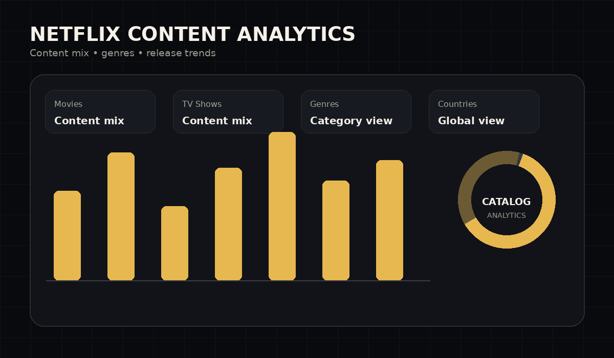
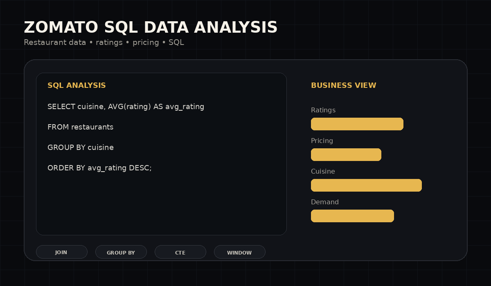

03In development
03In developmentBusiness Anomaly Detection & Alert System
A developing analytics system designed to flag unusual business signals early, creating a path from anomaly detection to timely alerts and investigation.
GitHub link coming laterHello, I'm Kunal
Data Analyst | Aspiring Data Scientist
I turn raw data into clear, decision-ready insights using Python, SQL, Excel, Power BI and Tableau — with a focus on clean analysis, strong storytelling and practical business impact.
Resume PDF is not added yet. Add assets/resume.pdf later and the button can be enabled without changing the layout.

About me
I'm a Data Analyst who enjoys understanding what the numbers are really saying — from cleaning messy datasets to finding patterns that can support better business decisions.
My core workflow combines Python, SQL / MySQL, Excel, Power BI and Tableau. I enjoy analytical projects where the final output is more than a chart: a clear story, a useful dashboard and a practical next step.
Reliable datasets are the foundation for reliable analysis.
Find patterns, relationships and trends worth discussing.
Turn findings into concise, business-focused stories.
My toolkit
Only the technologies I currently use or am actively building with.
Selected work
Explore the analysis, tools and thinking behind my current portfolio work.

01↗Analyzes a streaming content catalogue to surface patterns in content mix, genres and release trends, presenting the findings as a decision-friendly dashboard.
View on GitHub ↗
02↗Uses SQL to investigate restaurant-level data, compare ratings and pricing patterns, and answer business questions directly from structured tables.
View on GitHub ↗03In developmentA developing analytics system designed to flag unusual business signals early, creating a path from anomaly detection to timely alerts and investigation.
GitHub link coming laterExperience
KultureHire
Supported data-focused research by collecting, cleaning and preparing survey data for analysis. Worked with Excel to structure responses, identify meaningful patterns in Gen Z career aspirations and turn raw inputs into useful insights.
Education
Indira Gandhi National Open University (IGNOU)
Indian Institute of Computer Science (IICS)
Let's connect
I'm open to Data Analyst opportunities, analytics projects and conversations around data-driven work.